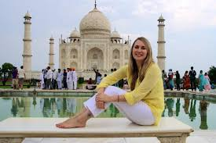
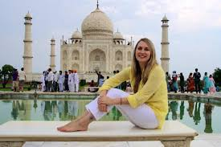

Tourism means people traveling for fun. It includes activities such as sightseeing and camping. People who travel for fun are called "tourists". Places where many tourists stay are called "resorts". Places that people go to for tourism are called tourist destinations,
 
Some people travel to learn about the history or culture of a city or country, or learn about the people who live there, or their ancestors. People from cold places sometimes like to relax in the sun. Many people from the north of Europe or North America travel to warmer places and visit beaches. Some people travel to do an activity which they cannot do at home. There are lots of ski resorts in the mountains of Switzerland and Austria, and seaside resorts in Greece and other warm countries. People sometimes visit friends and family in another city or country. Finally, some people enjoy a change in scenery. City people go to forests or deserts, and vice versa.